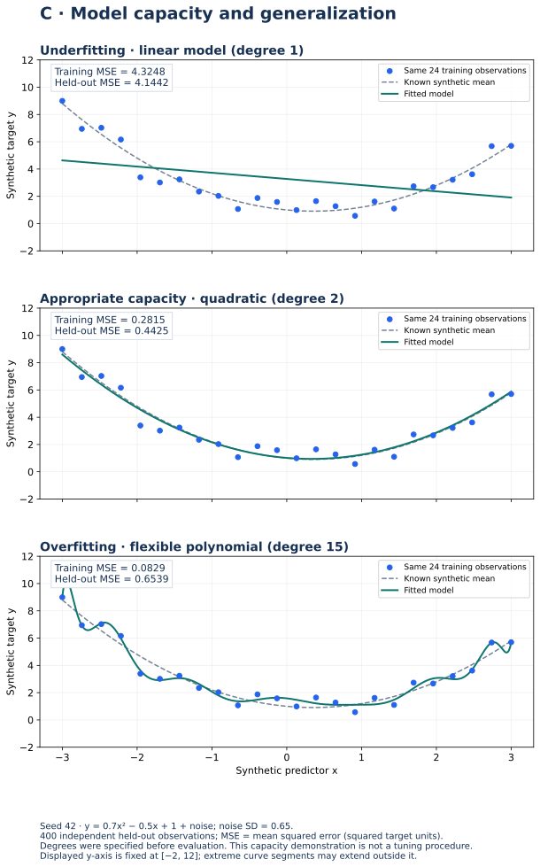

Lecture 10: ML Basics & Insight Extraction
Supervised vs unsupervised learning, overfitting, parameters vs hyperparameters, and turning cleaned data into decision-ready insights — course bridge from prep into later analytics.
1. Learning Objectives
- 1 Contrast supervised and unsupervised learning with analytics examples.
- 2 Explain overfitting and why validation (L9) matters.
- 3 Distinguish model parameters from hyperparameters.
- 4 Connect cleaning quality to trustworthy insights and “profitability” style business outcomes.
- 5 Outline a minimal insight-extraction workflow after prep.
2. Supervised vs Unsupervised
| Supervised | Unsupervised | |
|---|---|---|
| Label | Target known (e.g., severity, churn) | No target; find structure |
| Examples | Classification, regression | Clustering, association, dimensionality reduction |
| Analytics use | Predict risk, demand, revenue | Segment customers, detect anomaly groups |
Algorithms, baselines and evaluation
| Task | Baseline and examples | Useful metrics and cautions |
|---|---|---|
| Regression | Predict the training mean; compare linear regression, regularized regression and trees. | MAE is in target units, MSE in squared units; R² can be negative on held-out data. Residual plots reveal missed patterns. |
| Classification | Predict the training majority class; compare logistic regression and trees. | Inspect a confusion matrix, precision, recall and F1 per class. Accuracy can conceal poor minority-class performance. Choose thresholds on validation data by error costs. |
| Clustering | Compare interpretable segment definitions with scaled-feature k-means. | Silhouette measures separation under the chosen distance; it is not proof that clusters are useful or natural. Examine stability and decision relevance. |
Underfitting means the model cannot capture important structure; overfitting means it captures noise or sample-specific detail. Adjust complexity and regularization using training-side validation. Report baseline comparisons and limitations alongside final held-out results.
3. Overfitting
A model that fits training noise fails on new data. Signs: excellent train metrics, weak test metrics. Remedies (conceptual): simpler models, more data, regularization, proper validation (L9).
4. Parameters vs Hyperparameters
- Parameters — learned from data during training (weights, coefficients).
- Hyperparameters — set before training (tree depth, k in KNN, learning rate); chosen via validation / search.
Saving a fitted model stores parameters; the recipe includes hyperparameters and preprocessing steps.
5. Insight Extraction After Prep
- Confirm quality (L5) and sensible distributions (L6–L7).
- Engineer features that match decisions (L8).
- Segment and compare (groupby / EDA — Module 3).
- Translate findings into actions with estimated impact (e.g., investigate a verified cost driver before proposing an intervention).
6. Practical
- Label one question as supervised vs unsupervised for the accidents data.
- List two features you would engineer before a severity classifier.
- Write one overfitting risk if you evaluate only on the training rows.
7. Knowledge Check
Q1. Predicting accident severity from weather and speed is:
8. Summary · End of Module 2
- Cleaning path: quality → outliers → transform → features → validate → ML literacy.
- Supervised vs unsupervised frames the next modeling choices.
- Insights must survive hold-out evaluation and business scrutiny.
Worked practice: Evaluate a full predictive recipe
Run the pipeline lab: imputation, polynomial features, scaling and regularized regression. Select settings using training-side folds and compare a baseline on the final held-out test.
Interpretation check: Every learned preprocessing step must be fitted inside each training fold. The degree-1/2/15 chart is a prespecified capacity demonstration, not permission to tune on test errors.
Download runnable/guided lab: L10 Predictive Pipeline Lab
Setup, all labs, datasets, DAX measures and capstone guidance · Interactive retail teaching report
Underfitting, appropriate capacity and overfitting


Interpret: Why is the smallest training error not the strongest evidence of generalization?
A flexible model can fit training noise. Here degree 15 reduces training MSE but has larger held-out MSE than degree 2.
Read diagram labels (mobile text)
- −2
- 0
- 2
- 4
- 6
- 8
- 10
- 12
- Synthetic target y
- Training MSE = 4.3248
- Held-out MSE = 4.1442
- Underfitting · linear model (degree 1)
- Same 24 training observations
- Known synthetic mean
- Fitted model
- −2
- 0
- 2
- 4
- 6
- 8
- 10
- 12
- Synthetic target y
- Training MSE = 0.2815
- Held-out MSE = 0.4425
- Appropriate capacity · quadratic (degree 2)
- Same 24 training observations
- Known synthetic mean
- Fitted model
- −3
- −2
- −1
- 0
- 1
- 2
- 3
- Synthetic predictor x
- −2
- 0
- 2
- 4
- 6
- 8
- 10
- 12
- Synthetic target y
- Training MSE = 0.0829
- Held-out MSE = 0.6539
- Overfitting · flexible polynomial (degree 15)
- Same 24 training observations
- Known synthetic mean
- Fitted model
- C · Model capacity and generalization
- Seed 42 · y = 0.7x² − 0.5x + 1 + noise; noise SD = 0.65.
- 400 independent held-out observations; MSE = mean squared error (squared target units).
- Degrees were specified before evaluation. This capacity demonstration is not a tuning procedure.
- Displayed y-axis is fixed at [−2, 12]; extreme curve segments may extend outside it.
Your reading progress
Completion is self-reported reading progress, not a mastery score. Use the lab and interpretation checks to assess understanding.